Single-species size-spectrum dynamics
Gustav Delius
Source:vignettes/single_species_size-spectrum_dynamics.Rmd
single_species_size-spectrum_dynamics.RmdIntroduction
In this tutorial you will gain an understanding of size-spectrum dynamics. To separate the size-spectrum effects from the multi-species effects, we will concentrate on a single species in this tutorial.
Size-spectrum dynamics describes in detail how biomass is transported through the ecosystem from small sizes to large sizes. Thus the best way to think about size-spectrum dynamics is to think of traffic on a highway, except that instead of cars travelling along the road we have fish growing along the size axis, all the way from their egg size to their asymptotic size. Occasionally a car may turn off the highway, or a fish may die. Fish can only enter the highway at the start: their egg size.
The flow of traffic is dependent on the traffic density, which in turn is dependent on changes in the traffic velocity. High traffic density arises in sections of the road where the traffic velocity decreases. Such a decrease can lead to traffic jams. Low traffic density arises in sections where the velocity increases, as familiar when emerging on the other side of a traffic jam. Traffic jams are self-reinforcing phenomena: if there is a decrease in speed somewhere then the density of cars increases which causes a further decrease in speed, leading to an even higher density, and so on.
Similarly, high fish density arises in size classes where the growth rate decreases. A pronounced decrease in growth rate can lead to pronounced peaks in the fish density, similar to a traffic jam. Of course fish density is also controlled by the death rate, with a high death rate leading to a decreased fish density.
To be precise, fish density in a size class increases if the rate at which fish grow into the size class is larger than the rate at which they either grow out of the size class or die while they are in the size class. Thus size-spectrum dynamics is the result of the interplay between the death rate and the changes in the growth rate. For the mathematically minded, this interplay is expressed by the partial differential equation \[\frac{\partial}{\partial t}N(w,t) = -\frac{\partial}{\partial w}\big(N(w,t)g(w,t)\big) - \mu(w,t)\] where \(N(w,t)\) is the fish density at size \(w\) and time \(t\), \(g(w,t)\) is the growth rate of an individual of size \(w\) at time \(t\) and \(\mu(w,t)\) is its death rate. There is no need for you to understand the mathematical notation.
Size-spectrum dynamics is like the traffic on a highway where cars can leave the highway (fish can die) at any point, but they can only join the highway at its beginning (fish start out at the egg size). To model the size spectrum we therefore also have to describe the rate \(R(t)\) at which eggs are entering the size spectrum, i.e., the rate at which mature fish reproduce.
Below we will be discussing in detail what determines the death rate \(\mu(w,t)\), the growth rate \(g(w,t)\) and the rate of reproduction \(R(t)\).
Why study size-spectrum dynamics?
The study of traffic dynamics has had real practical benefits. For example, at least on motorways in Europe, when there is a danger of a traffic jam developing, automatic speed restrictions are imposed at a certain distance in front of the developing slow-moving traffic. For motorists who have not thought about traffic flow, these speed restrictions in places where there is no obvious reason for them are very annoying. However they do indeed avoid the formation of the traffic jam.
Of course we can not directly tell fish to obey limits to their growth rates. However we do have influence on their size-spectrum dynamics through fishing policy. For example if some species experiences stunted growth, like for example the Herring in the Baltic Sea, we could resolve that by reducing their numbers (which increases their growth rate because of reduced competition for food) or by reducing fishing on their prey.
The size-spectrum dynamics in a multi-species ecosystem is extremely complex. We can understand very simplified cases analytically, but in general we need to use numerical simulation to understand the consequences of various interventions.
The mizer package can simulate the size-specrum dynamics. Given the model parameters that enter into the expression of the growth rate, the death rate and the reproductive rate, and an initial fish size spectrum, mizer simulates the changes in the size spectrum over time according to the above equations.
Of particular interest is the steady state of the size spectrum, where the effects of the death rate and the changes in the growth rate exactly balance in such a way that the size spectrum stays constant over time. We will be looking both at the steady state and at time-varying size spectra below.
Our emphasis will be on understanding the dynamics. We do not just want to learn how to run simulations but we want to use the simulations to develop an intuition for how fish populations behave. We therefore start with very simple models first.
A first example
Let us start by looking at an example. Start RStudio and load the following packages:
If you get error messages saying that a particular package is not available, you will need to install that package. To install the mizerExperimental package you would need to do
remotes::install_github("sizespectrum/mizerExperimental")
The mizerExperimental package contains additional mizer functionality that is not yet mature enought to be part of core mizer. Loading the mizerExperimental package automatically also loads the mizer package.
Mizer collects all the parameters describing a size-spectrum model into one object of class MizerParams. You do not need to set up this object by hand but instead there are several wrapper functions in mizer that create the object for you for various types of models, and also many functions for changing specific parameters in a model. We will use the newSheldonParams() function to set up a model describing a single fish species living in an ecosystem whose size spectrum is given by a Sheldon power-law.
The newSheldonParams() function has many arguments that allow you to specify parameters for the fish species as well as for the community, but all these arguments have default values, so we can simply call the function without specifying those arguments. We will only specify the Sheldon exponent of the background community
params <- newSheldonParams(lambda = 2.05)
The function returns a MizerParams object and we have assigned that to the variable params. We will be explaining more about this model as we go along.
Steady state spectrum
The params object also contains an initial size spectrum that is close to the steady state of the model. The steady state is the state where in each size class the inflow of individuals through growth exactly balances the outflow of individuals through growth and death. If we start close to the steady state then usually if we simulate the size-spectrum dynamics for a while the population will evolve closer and closer to the steady state.
To get to the steady state we use the steady() function. The result of that function is again a MizerParams object but now with an initial size spectrum that has evolved to be very close to the steady state.
params <- steady(params)
## Steady state was reached before 1.5 years.We can plot the size spectrum with the plotSpectra() function.
plotSpectra(params, power = 0)
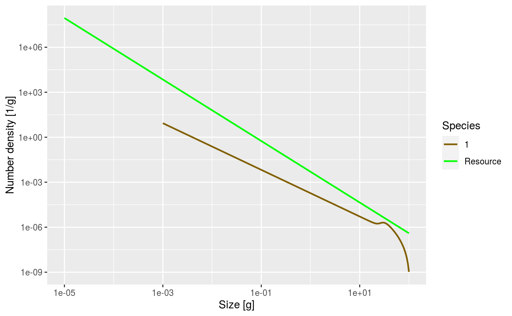
The power = 0 argument to the plotSpectra() function specifies that we want to plot the number density, rather than for example the biomass density.
The green line represents the number density of the background community, labelled as “Resource” in the plot legend, in which our foreground species finds itself. The green line is a straight line with slope -2.05. Thus the number density is proportional to \(w^{-2.05}\).
The other line represents the number density of our single species, which by default is just named unimaginatively “1”. We see that it is a straight line initially, but then has a bump before declining rapidly at large sizes. We will discuss in a short while what causes that shape.
The initial slope of the species number density is negative, which means that there are fewer larger fish than smaller fish. That is of course understandable: some fish die while they are growing up, so there tend to be fewer fish in larger size classes.
Exercise 1
Now it is time for you to do the first exercise to use the commands you have just learned about. For this purpose you should now open the R notebook file “exercises_single-species_size-spectrum_dynamics” and read it up to the place where it shows the first exercise. Then you put your R code for the exercise straight into the code chunks in that notebook and evaluate them there. When you are satisfied with your solution, come back to this document and continue reading.
Numbers
While the plotSpectra() function gives us a plot of the number density, it would be nice if we could get at the actual numbers. The number density of the steady state is stored in the params object in the initial_n slot. This is accessed as follows:
n <- params@initial_n
As you can see in the “Environment” pane in RStudio, n is a matrix with 1 row and 251 columns. The one row corresponds to the one species. In a multispecies model there would be one row for each species, holding the number density for that species. The 251 columns are for the number densities in each of the 251 size classes. In fact, n is a named array, i.e., each row and each column has names. These we can extract with the dimnames() function.
dimnames(n)
## $sp
## [1] "1"
##
## $w
## [1] "0.001" "0.00105" "0.0011" "0.00115" "0.0012" "0.00126" "0.00132"
## [8] "0.00138" "0.00145" "0.00151" "0.00158" "0.00166" "0.00174" "0.00182"
## [15] "0.00191" "0.002" "0.00209" "0.00219" "0.00229" "0.0024" "0.00251"
## [22] "0.00263" "0.00275" "0.00288" "0.00302" "0.00316" "0.00331" "0.00347"
## [29] "0.00363" "0.0038" "0.00398" "0.00417" "0.00437" "0.00457" "0.00479"
## [36] "0.00501" "0.00525" "0.0055" "0.00575" "0.00603" "0.00631" "0.00661"
## [43] "0.00692" "0.00724" "0.00759" "0.00794" "0.00832" "0.00871" "0.00912"
## [50] "0.00955" "0.01" "0.0105" "0.011" "0.0115" "0.012" "0.0126"
## [57] "0.0132" "0.0138" "0.0145" "0.0151" "0.0158" "0.0166" "0.0174"
## [64] "0.0182" "0.0191" "0.02" "0.0209" "0.0219" "0.0229" "0.024"
## [71] "0.0251" "0.0263" "0.0275" "0.0288" "0.0302" "0.0316" "0.0331"
## [78] "0.0347" "0.0363" "0.038" "0.0398" "0.0417" "0.0437" "0.0457"
## [85] "0.0479" "0.0501" "0.0525" "0.055" "0.0575" "0.0603" "0.0631"
## [92] "0.0661" "0.0692" "0.0724" "0.0759" "0.0794" "0.0832" "0.0871"
## [99] "0.0912" "0.0955" "0.1" "0.105" "0.11" "0.115" "0.12"
## [106] "0.126" "0.132" "0.138" "0.145" "0.151" "0.158" "0.166"
## [113] "0.174" "0.182" "0.191" "0.2" "0.209" "0.219" "0.229"
## [120] "0.24" "0.251" "0.263" "0.275" "0.288" "0.302" "0.316"
## [127] "0.331" "0.347" "0.363" "0.38" "0.398" "0.417" "0.437"
## [134] "0.457" "0.479" "0.501" "0.525" "0.55" "0.575" "0.603"
## [141] "0.631" "0.661" "0.692" "0.724" "0.759" "0.794" "0.832"
## [148] "0.871" "0.912" "0.955" "1" "1.05" "1.1" "1.15"
## [155] "1.2" "1.26" "1.32" "1.38" "1.45" "1.51" "1.58"
## [162] "1.66" "1.74" "1.82" "1.91" "2" "2.09" "2.19"
## [169] "2.29" "2.4" "2.51" "2.63" "2.75" "2.88" "3.02"
## [176] "3.16" "3.31" "3.47" "3.63" "3.8" "3.98" "4.17"
## [183] "4.37" "4.57" "4.79" "5.01" "5.25" "5.5" "5.75"
## [190] "6.03" "6.31" "6.61" "6.92" "7.24" "7.59" "7.94"
## [197] "8.32" "8.71" "9.12" "9.55" "10" "10.5" "11"
## [204] "11.5" "12" "12.6" "13.2" "13.8" "14.5" "15.1"
## [211] "15.8" "16.6" "17.4" "18.2" "19.1" "20" "20.9"
## [218] "21.9" "22.9" "24" "25.1" "26.3" "27.5" "28.8"
## [225] "30.2" "31.6" "33.1" "34.7" "36.3" "38" "39.8"
## [232] "41.7" "43.7" "45.7" "47.9" "50.1" "52.5" "55"
## [239] "57.5" "60.3" "63.1" "66.1" "69.2" "72.4" "75.9"
## [246] "79.4" "83.2" "87.1" "91.2" "95.5" "100"The names of the columns are the weight in grams at the start of each size class. Notice how R displays long vectors by breaking them across many lines and starting each line with a number in brackets. That number is the index of the first value in that row. So for example we see that the 151st size bracket starts at 1 gram. The number density in the size class between 1 gram and 1.05 grams is
n[1, 151]
## [1] 0.0001862372It is important to realise that this is not the number of fish in the size class, but the number density. To get the number of fish we have to multiply the number by the width of the size class. Conveniently those widths are also stored in the params object, in the dw slot. So the number of fish in the 151st size class is
(n * params@dw)[1, 151]
## [1] 8.777087e-06You may be surprised at the small number if you interpret it as the number of fish between 1 gram and 1.05 gram in the entire ocean. However it looks more reasonable if it is the average number per square meter of sea. For more of a discussion of this issue of workinv with numbers per area, numbers per volume or numbers for the entire system see https://sizespectrum.org/mizer/dev/reference/setParams.html#units-in-mizer
Biomass spectra
Without the power argument (or with power = 1 which is the default) the plotSpectra() function plots the biomass density as a function of size.
plotSpectra(params)
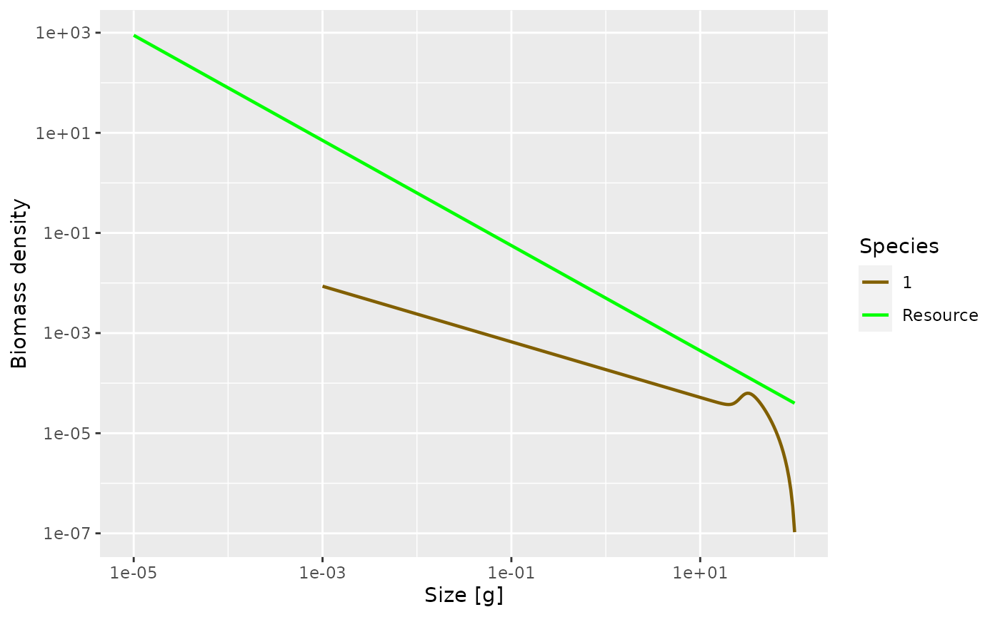
Now the green line representing the biomass density of the background has a slope of -1.05.
The initial slope of the species biomass density is negative, meaning that the biomass density decreases with size. This means that even though the individual fish of course gain biomass as they grow up, there is so much death among the larvae and juvenile fish that the total biomass of any cohort nevertheless decreases as it grows up. We will explain the reason for this later when we discuss predation mortality.
We can also plot the Sheldon spectrum, i.e., the biomass density as a function of the log weight instead of the weight, by supplying the argument power = 2 to plotSpectra().
plotSpectra(params, power = 2)
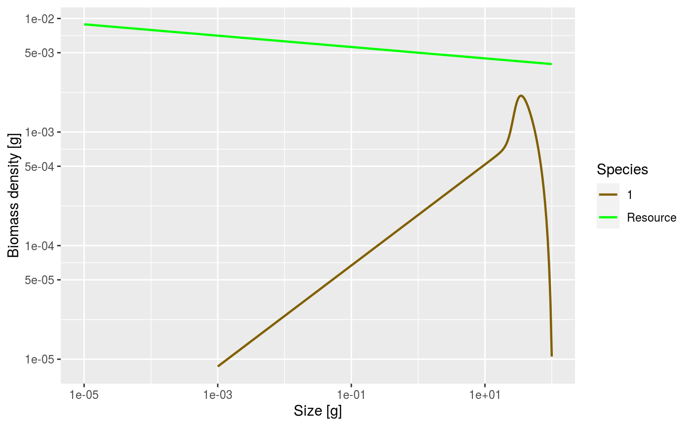
This now shows an approximately constant biomass density as a function of log size (the slope of the green line is -0.05). The biomass density of the species as a function of log size initially increases. So if binned in logarithmically-sized bins the biomass in each bin will initially increase, until it starts decreasing close to the maximum size of the species.
It may have been a bit confusing that we displayed the same size spectrum in three different ways. But it is important to be aware of this because in the literature you will see all different conventions being used, so if you see a plot of a size spectrum you always need to ask yourself exactly which density is being shown.
We can obtain the biomass density in a size class from the number density by multiplying the number density by the weight of the individuals in the size class. Of course there is a bit of error here because not all fish in the size class have the same weight, but with the small size classes that we use in mizer, the error is not too important. So we calculate
biomass_density <- n * params@w
The total biomass in each size class we obtain by multiplying the biomass density in each size class by the width of each size class
biomass <- biomass_density * params@dw
For example the biomass of fish between 1 gram and 1.05 grams is
biomass[151]
## [1] 8.777087e-06Next we will discuss the shape of the species size-spectrum in more detail.
Allometric rates
The first striking feature of the species size-spectrum, in all its representations, is that for small fish (larvae and juveniles) it is given by a straight line. This due to the allometric scaling of the physiological rates. The other striking feature is the bulge at around maturity size, which we will discuss in the section on reproduction.
First of all, as Mariella already mentioned yesterday, the metabolic rate, i.e., the rate at which an organism expends energy on its basic metabolic needs, scales as a power of the organisms’s body size, and the power is about \(p = 3/4\).
Because this energy needs to be supplied by consumption of food, it is natural to assume that also the consumption rate scales allometrically with a power of 3/4. When the consumption is greater than the metabolic cost then the excess leads to growth. Hence the growth rate too scales allometrically with power \(p = 3/4\).
Finally, the death rate of organisms tends to scale allometrically with a power of \(p - 1 = 3/4 - 1 = -1/4\). The death rate experienced by larger individuals is smaller than that of small individuals. Again this is confirmed by many observations.
It is a result of the mathematics that if the growth and death rates scale allometrically with exponents \(p\) and \(1-p\) respectively, for some metabolic exponent \(p\), that the number density at steady state is also a power law, i.e., a straight line on the log-log plot.
Let us check that in our model the physiological rates are indeed power laws, at least for the small sizes. We can get the growth rate with the getEGrowth() function. We assign the result to a variable that we name growth_rate.
growth_rate <- getEGrowth(params)
You can again see in the “Environment” pane that this is a matrix with one row for the one species and 251 columns for the 251 size classes. So for example the growth rate at size 1 gram is
growth_rate[1, 151]
## [1] 8.40452(because we had seen that the 151st size class starts at 1 gram). This is the per-capita growth rate, measured in grams per year.
We would like to make a log-log plot of the growth rate against size to check that it gives a straight line. We will use ggplot() for that purpose. As you saw already yesterday, ggplot() likes to work with data frames instead of named matrices, so we first convert the matrix into a data frame with the melt() function.
growth_rate_frame <- melt(growth_rate)
You can see in the “£nvironment” pane that the new variable that we called growth_rate_frame is a data frame with 251 observations of 3 variables. The 251 observations correspond to the 251 size classes. The 3 variables are called
names(growth_rate_frame)
## [1] "sp" "w" "value"They are the species sp, the size w, and the value which contains the growth_rate. This data frame we can pass to ggplot(), using techniques you already learned yesterday.
p <- ggplot(growth_rate_frame) + geom_line(aes(x = w, y = value)) + scale_x_log10() + scale_y_log10() + labs(x = "Weight [g]", y = "Growth rate [g/year]") p
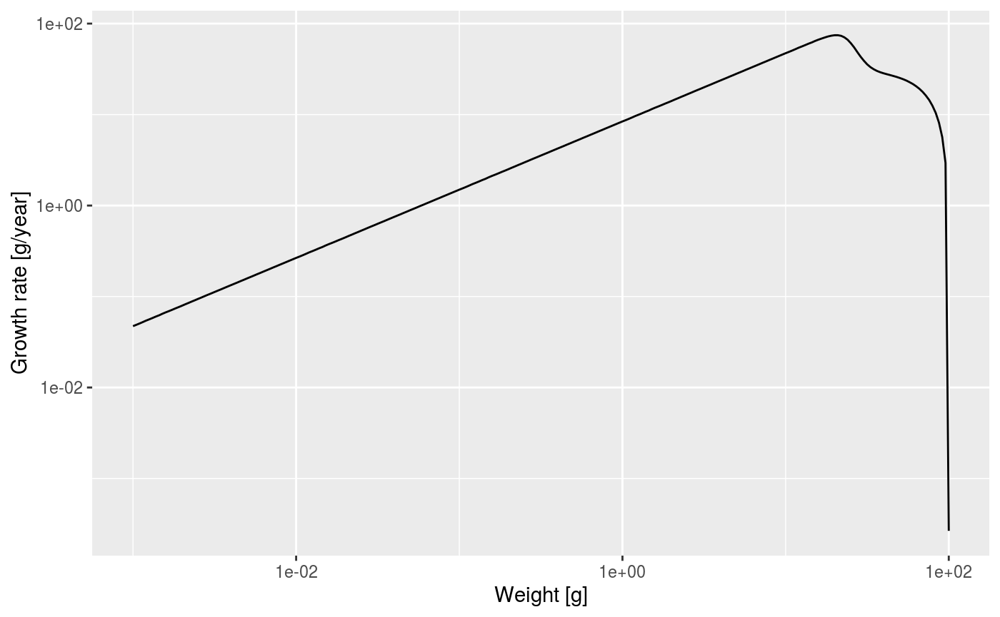 Note how we linked the x axis to the w variable and the y axis to the value variable.
We see that at least up to a size of a few grams the line is straight. Let’s isolate the growth rate for those smaller sizes
g_small_fish <- filter(growth_rate_frame, w <= 10)
and fit a linear model
##
## Call:
## lm(formula = log(g_small_fish$value) ~ log(g_small_fish$w))
##
## Coefficients:
## (Intercept) log(g_small_fish$w)
## 2.129 0.750The slope of the line is indeed 0.75 = 3/4. In fact, the above shows that for juveniles \[\log(g(w)) = 2.129 + \frac34 \log(w)\] and thus \[g(w) = g_0\ w^p = 2.129\ w^{3/4}.\]
Of course in a real model, the growth rate would not so exactly follow a power law, due to variations in the growth rate due to variations in food availability, for example.
Exercise 3
Now over to you. Do exercise 3 in the exercise notebook. Use the methods you have just seen to make a log-log plot of the mortality rate. You can get the mortality rate with the getMort() function. Then fit a linear model and thus determine that the mortality rate is \[\mu(w) = \mu_0\ w^{p-1} = 1.909\ w^{-1/4}.\]
Slope of juvenile spectrum
We have seen that for juvenile fish the growth rate and the death rate are both power laws with exponents \(p=3/4\) and \(p-1=-1/4\) respectively and then by solving a differential equation we can derive that the juvenile spectum also follows a power law: \[N(w) = N_0\ w^{-\mu_0/g_0 - p}\]
I can’t do the maths with you (and you probably don’t want me to anyway), but we can check this claim numerically. Let’s look at the spectrum up to 10 grams. By now we know how to do this. We first convert the number density matrix n into a dataframe and then filter out all observations that do not have \(w\leq 10\). The resulting data frame we pass to ggplot() and ask it to plot a line on log-log axes.
nf <- melt(n) %>% filter(w <= 10) ggplot(nf) + geom_line(aes(x = w, y = value)) + scale_x_log10() + scale_y_log10() + labs(x = "Weight [g]", y = "Number density [1/g]")
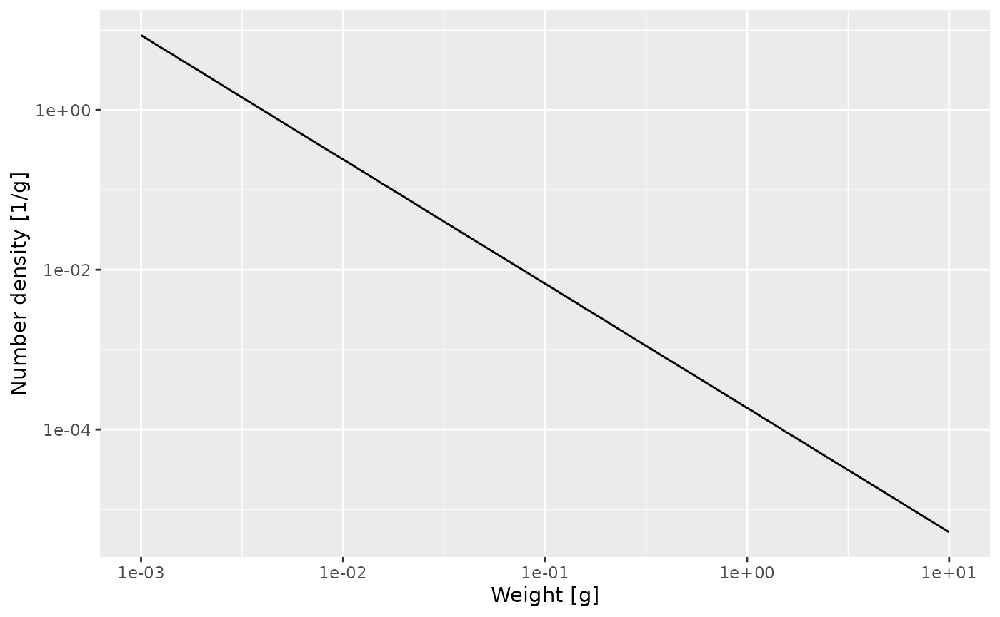
That confirms what we had seen earlier, that for fish less than 10 grams the number density is a power law. To determine the exponent of the power law we need the slope of that straight line in the log-log plot, and the easiest way to do that is to fit a linear model to the log variables:
##
## Call:
## lm(formula = log(nf$value) ~ log(nf$w))
##
## Coefficients:
## (Intercept) log(nf$w)
## -8.588 -1.555The mathematics claimed that the exponent should be \(-\mu_0 / g_0 - p\). We have already observed that \(\mu_0 = 1.909\) and \(g_0 = 2.129\) so we get
-1.909 / 2.129 - 3/4
## [1] -1.646665That is not quite the result of the linear model fit, but that is the nature of numerical calculations: one gets discretisation errors and rounding errors.
Reproduction
Now that we understand the shape of the size spectrum for the juvenile fish, let us try to understand the bulge that follows. The increase of abundance that we see at around the maturity size of our species is due to a drop in growth rate at that size. This in turn is due to the fact that the mature fish invests some of its energy income into reproduction.
The proportion of the available energy that is invested into reproduction is stored in the psi slot of the params object. As so many of the other quantities in mizer, it is a matrix with one row for each species and once column for each size class. So we can plot it by melting the matrix into a data frame and then using this in ggplot().
ggplot(melt(params@psi)) + geom_line(aes(x = w, y = value))
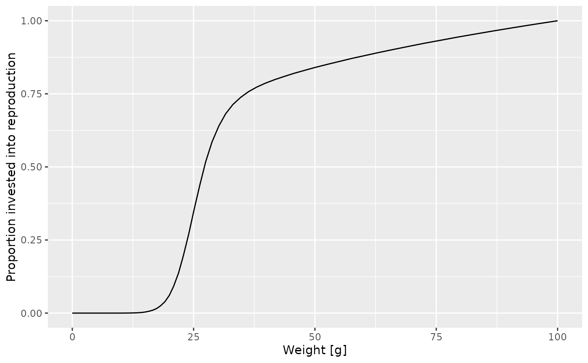
How was this maturity curve specified? There are four species parameters involved: * the maturity size w_mat at which 50% of the individuals are mature. * the size w_mat25 at wich 25% of the individuals are mature. * the asymptotic size w_inf at which an organism invests 100% of its income into reproduction and thus growth is zero. * an exponent m that determines how the proportion that an individual invests into reproduction scales with its size.
Such species parameters are contained in the species_params slot of the params object.
params@species_params
## species w_min w_inf w_mat w_min_idx k_vb ks beta sigma z0 alpha erepro
## 1 1 0.001 100 25.11886 1 1 4 100 1.3 0 0.4 0.2036643
## interaction_resource n p q pred_kernel_type h k gamma
## 1 1 0.75 0.75 0.8 lognormal 51.6855 0 3686.147
## w_mat25 m R_max constant_reproduction
## 1 22.50546 1 1.692216 0.4230541As you can see, there are a lot of other species parameters, some of which we will talk about later. For now let’s just select the 4 parameters we are interested in.
select(params@species_params, w_mat, w_mat25, w_inf, m)
## w_mat w_mat25 w_inf m
## 1 25.11886 22.50546 100 1Effect of change in maturity curve
Let us investigate what happens when we change the maturity curve. Let’s assume the maturity size is actually 40 grams and the size at which 25% of individuals is mature is 30 grams. Let us change the values in the species_params data frame. But first we make a copy of the params object so that we can keep the old version around unchanged.
params_changed_maturity <- params
In this copy we now change the species paramters
params_changed_maturity@species_params$w_mat <- 40 params_changed_maturity@species_params$w_mat25 <- 30 select(params_changed_maturity@species_params, w_mat, w_mat25, w_inf, m)
## w_mat w_mat25 w_inf m
## 1 40 30 100 1This has not yet changed the params@psi slot in the params object yet. For that we need to call the setReproduction() function.
params_changed_maturity <- setReproduction(params_changed_maturity)
Now the maturity curve has changed, which we can verify by plotting it
ggplot(melt(params_changed_maturity@psi)) + geom_line(aes(x = w, y = value))
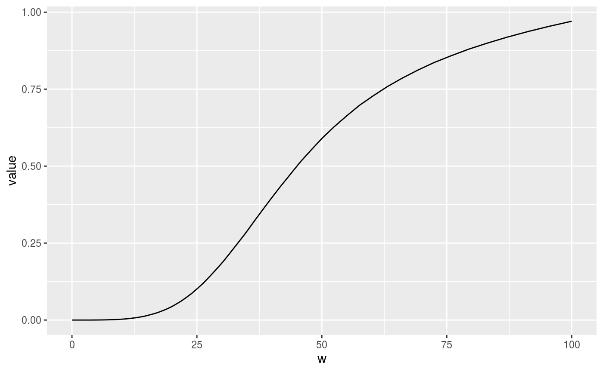
At this point let’s take a little break and learn how to draw two curves in the same graph. How can we see the old maturity curve and the new maturity curve in the same plot? First we create the data frames we would need for the separate plots
psif <- melt(params@psi) psif_changed_maturity <- melt(params_changed_maturity@psi)
Then we add an extra column to each dataframe describing it
psif$type = "original" psif_changed_maturity$type = "changed"
Then we bind the two data frames together
psif_combined <- rbind(psif, psif_changed_maturity)
and send that combined data frame to ggplot()
ggplot(psif_combined) + geom_line(aes(x = w, y = value, colour = type))
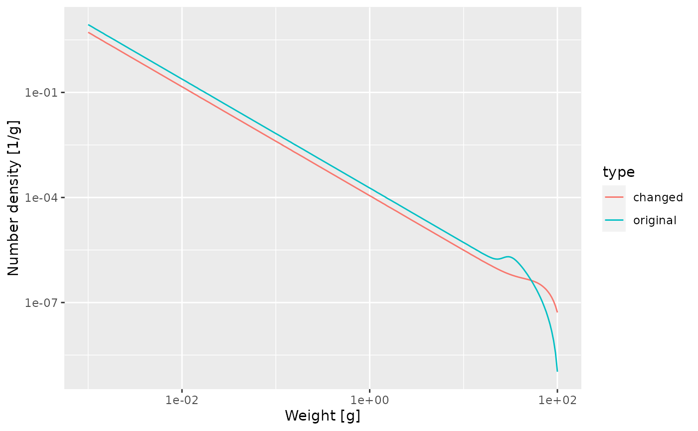
This change in the maturity curve of course implies a change in the growth rates.
Exercise 4
Make a plot showing the growth rates of the original model and of the model with the changed maturity curve.
Next let us look how the steady state spectrum has changed. We first need to run the changed model to steady state
params_changed_maturity <- steady(params_changed_maturity)
## Steady state was reached before 6 years.We use the same technique as above to plot the steady-state spectra of both models on top of each other.
nf <- melt(params@initial_n) nf_changed_maturity <- melt(params_changed_maturity@initial_n) nf$type <- "original" nf_changed_maturity$type <- "changed" nf_combined <- rbind(nf, nf_changed_maturity) ggplot(nf_combined) + geom_line(aes(x = w, y = value, colour = type)) + scale_x_log10() + scale_y_log10() + labs(x = "Weight [g]", y = "Number density [1/g]")

As expected, the bump happens later due to the larger maturity size and it is less pronounced, because the maturity curve is less steep.
Reproductive efficiency
So what happens with the energy that is invested into reproduction? It leads to spawning and thus the influx of new individuals at the egg size. This conversion of energy invested into reproduction into egg biomass is inefficient. Firstly much energy is spent on things like migration to spawning grounds, rather than on production of gonadic mass. Secondly, only a small proportion of eggs that are produced are viable and hatch into larvae.
In fact, in order for the population to be at steady state, the reproductive efficiency has to have a particular value. If it were higher, the population would increase, if it was lower, the population would decrease with time. The steady() function has set the reproductive efficiency to just the right value and has stored it in the erepro species parameter.
params@species_params$erepro
## [1] 0.2036643The model with the changed maturity curve leads to a different rate of investment into reproduction and thus needs a slightly different reproductive efficiency to remain at steady state:
params_changed_maturity@species_params$erepro
## [1] 0.1915709This is the reproductive efficiency at steady state. When the population deviates from the steady state, for example due to a change in fishing, the reproductive efficiency can be set to change according to a Beverton-Holt stock-recruitment curve. We will discuss this again later.
Effect of decreased prey availability
The energy income for a fish comes from predation on its prey. If there is less prey, the fish consumes less and thus its growth rate will decrease. Let us investigate this by artificially removing some prey.
Below we decrease the community spectrum by a factor of 10 in the size range from 1mg to 10mg. We again create a new parameter object to be able to keep the old one around
params_starved <- params size_range <- params@w_full > 10^-3 & params@w_full < 10^-2 params_starved@initial_n_pp[size_range] <- params@initial_n_pp[size_range] / 10 plotSpectra(params_starved)
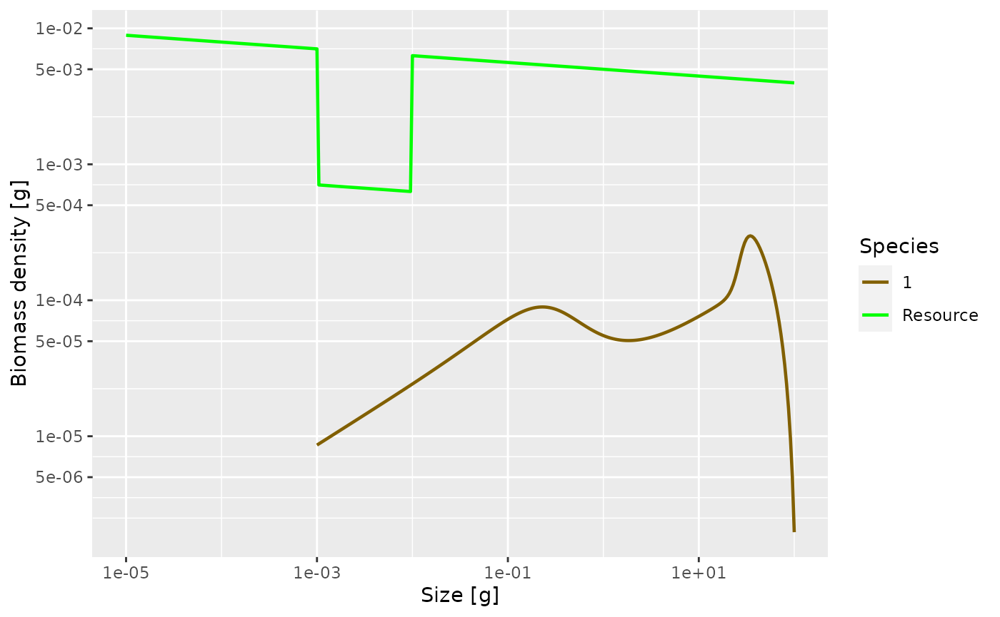
That is of course quite a dramatic intervention, and so should allow us to clearly see its effect on the steady-state size distribution of our species.
params_starved <- steady(params_starved)
## Steady state was reached before 6 years.plotSpectra(params_starved, power = 2)
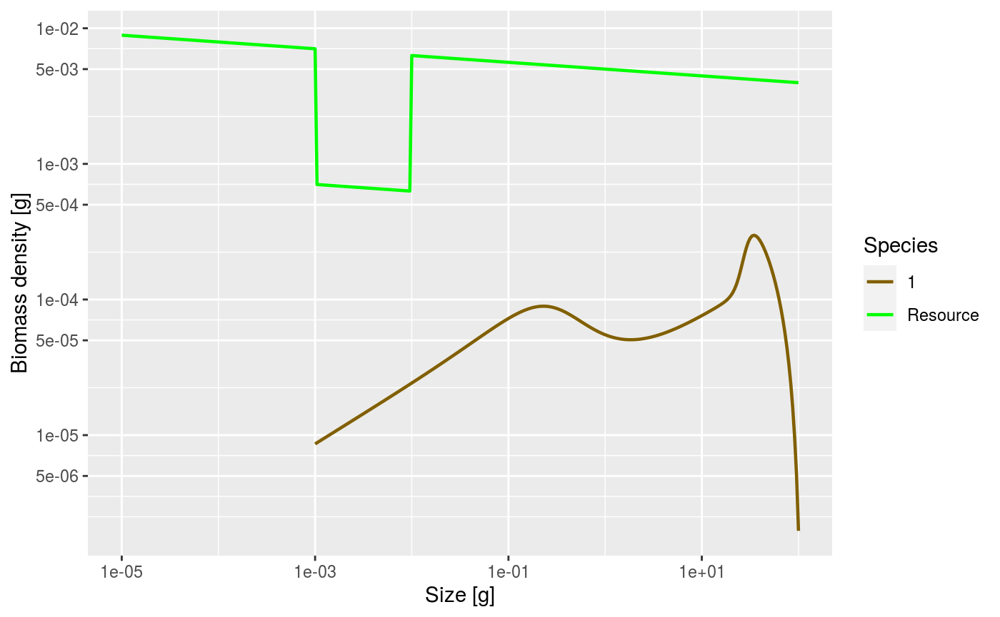
As expected, the lack of food and the resulting slow-down in growth leads to a traffic jam: a peak in the biomass density. This slow-down occurs at a size that is about a factor of 100 larger than the size at which food is reduced. Why this is we will discuss in the next section. But first investigate what happens when the prey abundance is increased instead of decreased.
Predation
It is now time to discuss the important issue of predation. It is through predation that the fish obtains the energy it needs to maintain its metabolism, to grow and to invest in reproduction. So it is important how we model this predation.
The easiest case in which to understand predation is to imagine a filter feeding fish, swimming around with its mouth open. Clearly the amount of food it takes in is determined by four things:
- the density of prey in the water,
- how much volume of water the fish is able to filter, which will depend on how fast it swims as well as on its gape size.
- what part of this prey the fish is able to filter out of the water, which will be limited by its gape size and by how fine its gill rakers are,
- how fast it can digest the food. If it can filter the prey faster than it can digest, it will have to start letting prey go uneaten.
For a more active hunter the situation will be similar. The rate at which it predates will depend on four things:
- the density of prey in the water
- the volume of water that the fish patrols and in which it will be able to seek out its prey. This may depend on things like radius of vision.
- which of this detected prey the fish is able to catch, which will depend on its mouth size but also on its agility and skill as well as on the defensive mechanisms of the prey.
- how fast it can digest the food.
Of these four factors, we have of course already been discussing the density of prey. In the next section we will discuss the ability to filter out or catch prey of particular sizes, which we model via the predation kernel. In the section after that we will discuss the search volume and then in the following section the maximum consumption rate.
The predation kernel
Fish will be particularly good at catching prey in a specific range of sizes, smaller than themselves. This is encoded in the size-spectrum model by the predation kernel. Let us take a look at the predation kernel in our model. We can obtain it with the function getPredKernel().
pred_kernel <- getPredKernel(params)
This is a large three-dimensional array (predator species x predator size x prey size). We extract the kernel of a predator of size 10g (using that we remember that this is in size class 201)
pred_kernel_10 <- pred_kernel[, 201, , drop = FALSE]
The drop = FALSE option is there to prevent R from dropping any of the array dimensions. We can now plot this as usual
ggplot(melt(pred_kernel_10)) + geom_line(aes(x = w_prey, y = value)) + scale_x_log10()
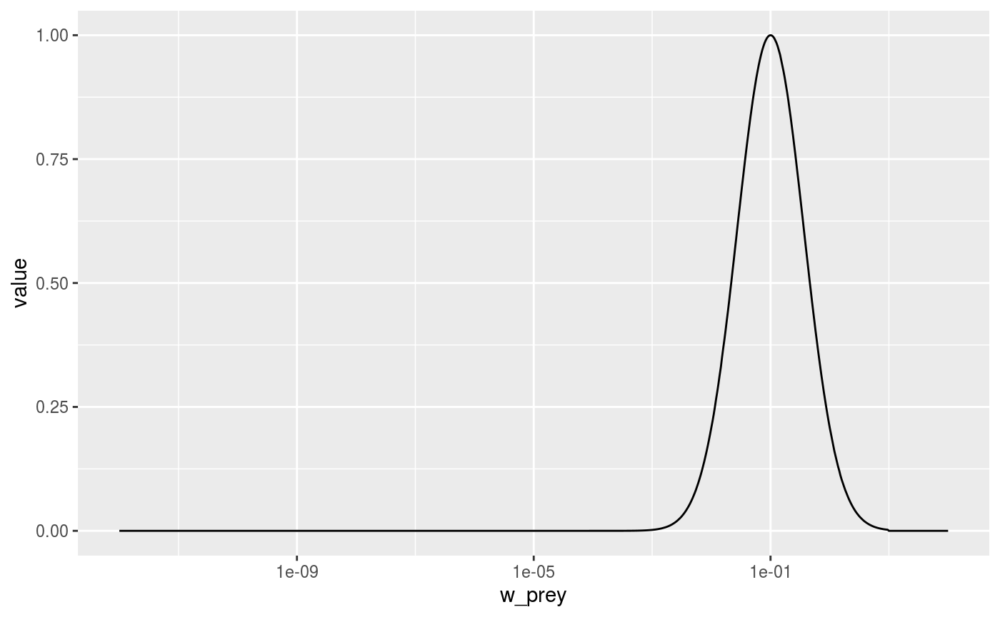
We see that the predator of size 10g likes to feed on prey that is about a factor 100 smaller than itself, but also feeds on other sizes, just with reduced preference. The preferred predator/prey size ratio is determined by the species parameter beta and the width of the feeding kernel, i.e., how fussy the predator is regarding their prey size, is determined by the species parameter sigma. In our model these have the values
select(params@species_params, beta, sigma)
## beta sigma
## 1 100 1.3Let us change the preferred predator/prey mass ratio from 100 to 1000. As usual, we first create a copy of the parameter object before making changes. After changing the species parameters we have to call setPredKernel() to actually change the predation kernel in the model. Then, after changing the predation kernel, we have to determine the new steady state with steady(). Finally we plot the resulting spectrum.
params_pk <- params params_pk@species_params$beta <- 1000 params_pk <- setPredKernel(params_pk)
Let’s make a plot to see that the predation kernel has indeed changed.
getPredKernel(params_pk)[, 201, , drop = FALSE] %>% melt() %>% ggplot() + geom_line(aes(x = w_prey, y = value)) + scale_x_log10()
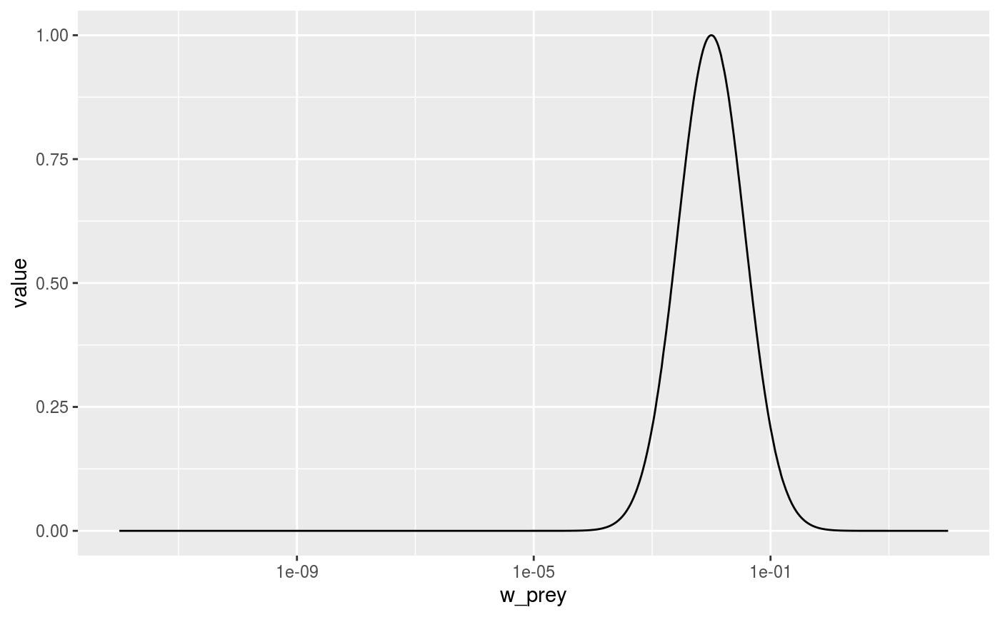
If we now again reduce the prey in the size range from 1mg to 10mg as before, we now expect this to produce a peak in the biomass spectrum somewhere between 1g and 10g. Let’s check.
params_pk@initial_n_pp <- params_starved@initial_n_pp params_pk <- steady(params_pk)
## Steady state was reached before 4.5 years.plotSpectra(params_pk, power = 2)

Yes, as expected.
For details of how beta and sigma parametrise the predation kernel, see https://sizespectrum.org/mizer/dev/reference/lognormal_pred_kernel.html#details. For information on how to change the predation kernel, see https://sizespectrum.org/mizer/dev/reference/setPredKernel.html#setting-predation-kernel
It is very important not to confuse the prey preference with the diet. Just because a predator might prefer to feed on prey of a particular size if it had free choice does not mean that it actually feeds predominantly on such prey. The actual diet of the fish depends also on the availability of prey. Because smaller prey are more abundant, the realised predator/prey mass ratio in the diet will be smaller than the preferred predator/prey mass ratio. This is particularly important when estimating the predation kernel from stomach data.
Search volume
Next we consider the factor that models the volume of water a filter feeder is able to filter in a certain amount of time, or the volume of water a forage fish is able to patrol in a certain amount of time. This is difficult to model fron first principles, although people have tried to argue in terms of swimming speeds of fish. We will simply assume that this search volume rate is also an allometric rate. Let \(\gamma(w)\) denote this rate for a predator of size \(w\). The we assume that \[\gamma(w) = \gamma_0\ w^q\] for some exponent \(q\). We know that a fish needs to consume prey at a rate that scales with its body size to the power p, with p about 3/4. We also know that the prey density will be approximately described by the Sheldon power law, i.e., that \(N(w) = N_0\ w^{-\lambda}\) with \(\lambda\). A bit of maths then says that \[q = 2 - \lambda + n\] This explains the message you got when you created the params object with a certain choice of \(\lambda\): mizer chose the search volume exponent automtically according to this formula. In the real world evolution will have made sure that the fish will have developed a feeding strategy that allows it to cover its metabolic costs, and thus leads to that search volume exponent of \(q\). Clearly filter feeders have taken a very different route to this than forage fish, but the result is the same.
Let us see what effect changing the coefficient \(\gamma_0\) in the search volume rate has. Its current value in our model is
params@species_params$gamma
## [1] 3686.147We change that with setSearchVolume() and find the new steady state.
params_new_gamma <- params params_new_gamma@species_params$gamma <- 2000 params_new_gamma <- setSearchVolume(params_new_gamma) %>% steady()
## Steady state was reached before 7.5 years.We can see the effect in the growth curve of our species. In the original model it looks as follows:
plotGrowthCurves(params, species = "1")
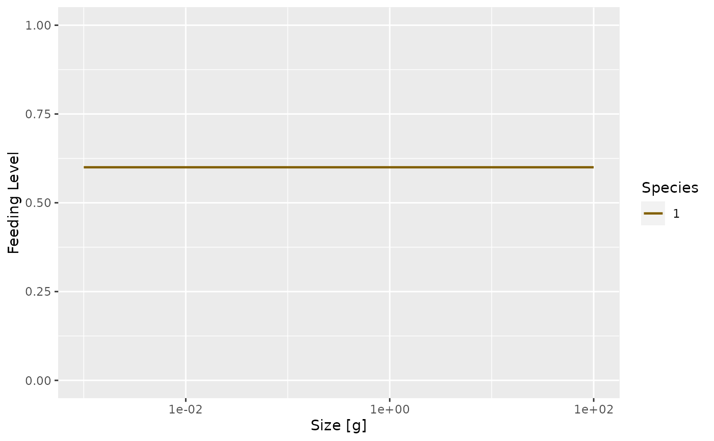
In the modified model it looks like
plotGrowthCurves(params_new_gamma, species = "1")

Exercise 7
What effect will this change in growth rate have on the slope of the juvenile spectrum? Will it be steeper or shallower? Make the plot of the spectrum to see.
Feeding level
A predator will have a maximum intake rate. It will simple not be able to utilise food at a faster rate than its maximum intake rate. Of course in practice it will not feed at the maximum intake rate because of limited availability of prey. We describe this by the feeding level which is the proportion of its maximum intake rate at which the predator is actually taking in prey.
In our simple model this feeding level is constant.
plotFeedingLevel(params)

In the model with the reduced search volume the feeding level will be lower
plotFeedingLevel(params_new_gamma)
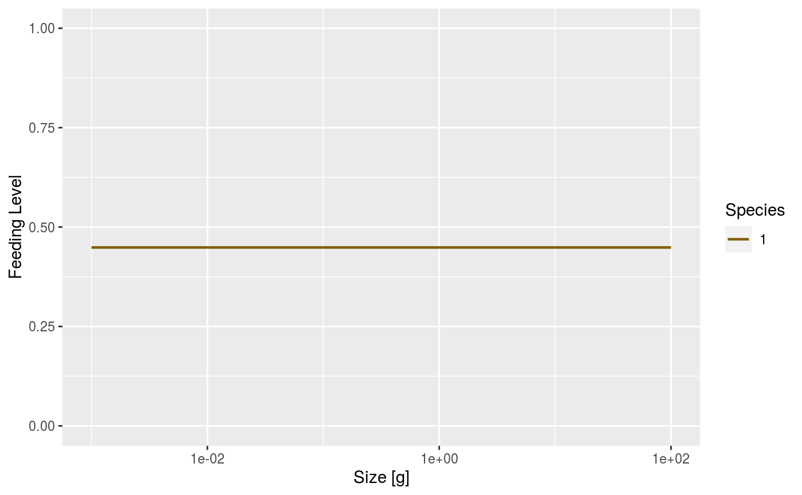
Our model is taking an allometric form for the maximum intake rate \(h(w)\) as a function of predator size \(w\): \(h(w) = h\ w^n\). The current value of the coefficient \(h\) is
params@species_params$h
## [1] 51.6855We can change the maximum intake rate with setIntakeMax().
Mortality
Death from predation
Of course growth of the predator is only one aspect of predation. The other is the death of the prey. Growth and mortality are coupled. Increased growth of one class of individuals will necessitate increased death of another. There is no free lunch.
Once we have specified the predation parameters, these parameters determine both the growth of predators but also the mortality rate of prey. So we don’t have to introduce new paramters in this section.
Background mortality
In addition to mortality caused by predation from other fish, there will be some mortality from other causes. This could be predation from animals that we have not included in our model, like sea birds or mamals, or it could be death from old age (senescent death) or disease. Mizer allows setting of background death with setBMort().
Fishing mortality
The cause of mortality that is most under our control is mortality from fishing. You can see how fishing is set up in mizer at https://sizespectrum.org/mizer/dev/reference/setFishing.html#setting-fishing. Here we only look at a simple example: we introduce fishing on our species only for fish above 30 grams. All fish greater than 30 grams will be exposed to the same fishing mortality. We call this kind of fishing selectivity “knife_edge” selectivity. Mizer can deal with more general selectivity curves, like sigmoidal or doubly sigmoidal.
params_fishing <- params params_fishing@species_params$sel_func <- "knife_edge" params_fishing@species_params$knife_edge_size <- 30 params_fishing <- setFishing(params_fishing)
We now need to specify the fishing effort and can then find and plot the steady state
params_fishing@initial_effort <- 1 params_fishing <- steady(params_fishing)
## Steady state was reached before 4.5 years.plotSpectra(params_fishing, power = 2)
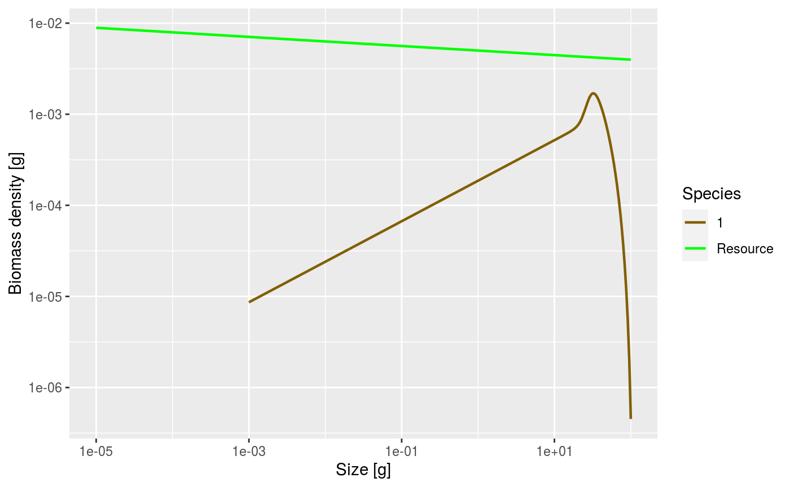
Outlook
The fish species we have studied had unlimited food and constant mortality. That of course is very unrealistic. In reality, food will become scarce when the fish population increases too much. Also the number of predators will grow. This will lead to interesting and important non-linear effects that we will study in the next tutorial notebook.